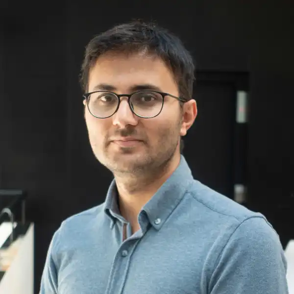
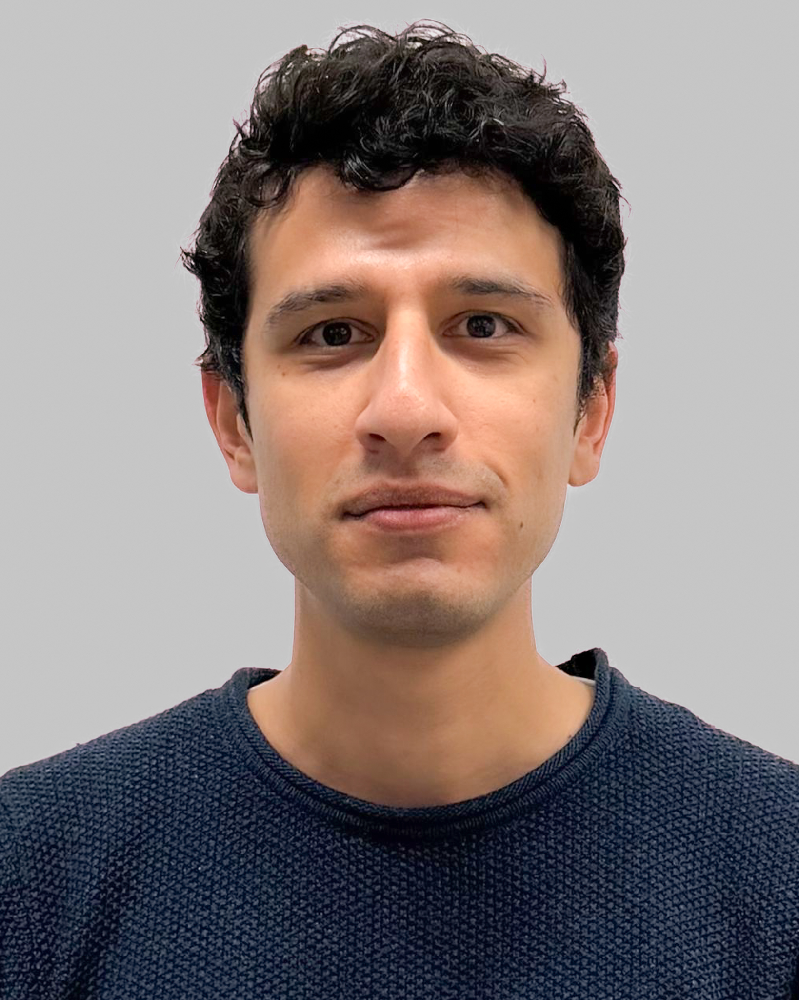

Lining Yao
University of California, Berkeley
Assistant Professor
Bringing together adaptable robotic bodies and intelligent control to advance real-world robot adaptation.
Proposed for ICRA 2027
Conference affiliation and workshop acceptance are not confirmed.

Reconfigurable robotics is broadening beyond its traditional focus on modular machines that mechanically rearrange their structures. Emerging approaches include shape-morphing mechanisms, smart and inflatable materials, bodies with tunable stiffness, robotic metamaterials, and collectives that assemble in response to a task. In parallel, advances in AI, optimization, sensing, planning, and control are creating new ways to coordinate these forms of physical adaptation. Together, these developments point toward robots that may eventually reason not only about how to move, but also about which embodiment is best suited to the task.
This workshop will define and advance reconfigurable intelligence, the integration of adaptable robotic embodiments with the computational intelligence required to design, select, assemble, plan, and control them. These systems can morph their shape, alter mechanical or functional properties, rearrange modules, or coordinate collectively. Such capabilities could enable individual robots, modular robotic systems, and robot collectives to traverse varied environments, manipulate rigid and deformable objects, create task-specific tools or supporting structures, and transition among different modes of physical interaction.
The workshop is organized around four pillars: (1) morphing mechanisms and material intelligence, covering compliant structures, origami- and kirigami-inspired designs, smart materials, tunable mechanical properties, and robotic metamaterials; (2) modular embodiments and robotic assembly, examining module design, morphology selection, assembly planning, and collective reconfiguration; (3) embodied interaction, sensing, and dexterity, exploring how adaptable bodies perceive, contact, and manipulate their environments; and (4) embodiment-aware computational intelligence, addressing model-based optimization, learning, foundation models, motion and morphology planning, and adaptive control. Together, these pillars will connect new robotic hardware capabilities with the computational methods needed to select, realize, and adapt robotic embodiments.
This workshop is designed as a half-day event with seven invited talks from experts in those four areas, six lightning talks by early-career researchers, and a poster session. A moderated panel will synthesize shared challenges and foster research connections across the four workshop pillars.
Invitations and participation TBA.
University of California, Berkeley
Assistant Professor
Beihang University
Professor
Massachusetts Institute of Technology
Director, CSAIL
Stanford University
Associate Professor
Invitation pending
Affiliation TBA
Invitation pending
Affiliation TBA
Submission details TBA.
The call is not open. Submission instructions will appear here when confirmed.
Submission portal TBA13:00–17:00 · Workshop date and time zone TBA.
| Time | Session | Presenter |
|---|---|---|
| 13:00 | Opening remarks | TBA |
| Topic 1 · Title TBA | ||
| 13:10 | Invited talk · Title TBA | Speaker 1 · TBA |
| 13:30 | Invited talk · Title TBA | Speaker 2 · TBA |
| 13:50 | Invited talk · Title TBA | Speaker 3 · TBA |
| 14:10 | Invited talk · Title TBA | Speaker 4 · TBA |
| 14:30 | 6 lightning talks (5 minutes each) | TBA |
| 15:00 | Tea break & poster session | — |
| Topic 2 · Title TBA | ||
| 15:30 | Invited talk · Title TBA | Speaker 5 · TBA |
| 15:50 | Invited talk · Title TBA | Speaker 6 · TBA |
| 16:10 | Invited talk · Title TBA | Speaker 7 · TBA |
| 16:30 | Panel discussion | Panelists TBA |
| 17:00 | End of workshop | — |
EPFL
Scientist
EPFL
PhD Student

Harvard University
Postdoctoral Researcher

EPFL
PhD Student
University of Tennessee, Knoxville
Assistant Professor

Cornell University
Assistant Professor
New York University
Assistant Professor

New York University
PhD Student
Harvard University
Professor
EPFL
Professor